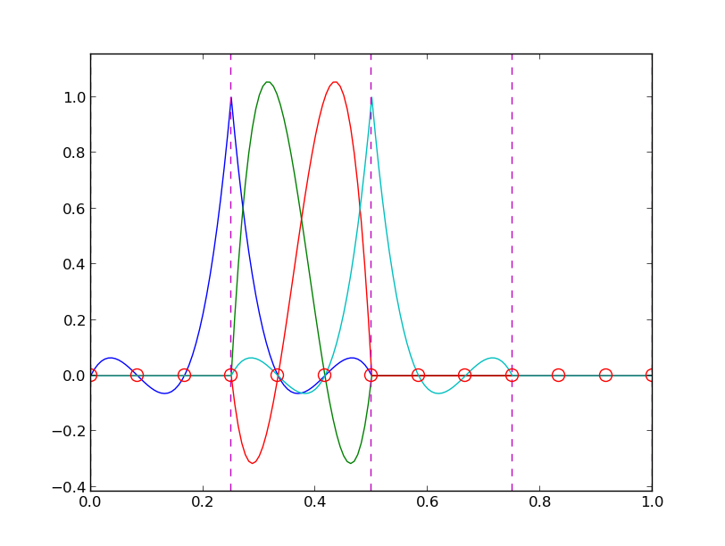

Note: QUITE PRELIMINARY VERSION
Approximation of vectors
Approximation of planar vectors
The least squares method
The Galerkin method
Approximation of general vectors
The least squares method
The Galerkin method
Global basis functions
The least squares method
The Galerkin method
Example: Linear approximation
Implementation of the least squares method
Perfect approximation
Ill-conditioning
Fourier series
The collocation or interpolation method
Example
Lagrange polynomials
Successful example
Less successful example
Remedy for strong oscillations
Finite element basis functions
Elements and nodes
Example
The basis functions
Construction principles
Properties of \( \basphi_i \)
Example on quadratic \( \basphi_i \)
Example on linear \( \basphi_i \)
Example on cubic \( \basphi_i \)
Calculating the linear system
Assembly of elementwise computations
Mapping to a reference element
Integration over a reference element
Implementation
Integration
Linear system assembly and solution
Example on computing approximations
The structure of the coefficient matrix
Applications
Sparse matrix storage and solution
A generalized element concept
Cells, vertices, and degrees of freedom
Extended finite element concept
Implementation
Cubic Hermite polynomials
Numerical integration
Basic integration rules with uniform point distribution
Gauss-Legendre rules with optimized points
Summary of a finite element
Accuracy of piecewise polynomial approximations
Approximation of vector-valued functions
Approximation of functions in 2D
Exercises
Exercise 1: Linear algebra refresher I
Exercise 2: Linear algebra refresher II
Exercise 3: Approximate a three-dimensional vector in a plane
Exercise 4: Approximate the exponential function by power functions
Exercise 5: Approximate a high frequency sine function by lower frequency sines
Exercise 6: Fourier series as a least squares approximation
Exercise 7: Approximate a \( \tanh \) function by Lagrange polynomials
Exercise 8: Improve an approximation by sines
Exercise 9: Define finite element meshes
Exercise 10: Approximate a step function by finite elements
Exercise 11: Perform symbolic finite element computations
The finite element method is a powerful tool for solving differential equations, especially in complicated domains and where higher-order approximations are desired. Figure 1 shows a two-dimensional domain with a non-trivial geometry. The idea is to divide the domain into triangles (elements) and seek a polynomial approximations to the unknown functions on each triangle. The method glues these piecewise approximations together to find a global solution. Linear and quadratic polynomials over the triangles are particularly popular.
Many successful numerical methods for differential equations, including the finite element method, aim at approximating the unknown function by a sum
$$ \begin{equation} u(x) = \sum_{i=0}^N c_i\basphi_i(x), \label{fem:u} \end{equation} $$ where \( \basphi_i(x) \) are prescribed functions and \( c_i \), \( i=0,\ldots,N \), are unknown coefficients to be determined. Solution methods for differential equations utilizing \eqref{fem:u} must have a principle for constructing \( N+1 \) equations to determine \( c_0,\ldots,c_N \). Then there is a machinery regarding the actual constructions of the equations for \( c_0,\ldots,c_N \) in a particular problem. Finally, there is a solve phase for computing the solution \( c_0,\ldots,c_N \) of the \( N+1 \) equations.
Especially in the finite element method, the machinery for constructing the discrete equations to be implemented on a computer is quite comprehensive, with many mathematical and implementational details entering the scene at the same time. From an ease-of-learning perspective it can therefore be wise to introduce the computational machinery for a trivial equation: \( u=f \). Solving this equation with \( f \) given and \( u \) on the form \eqref{fem:u} means that we seek an approximation \( u \) to \( f \). This approximation problem has the advantage of introducing most of the finite element toolbox, but with postponing demanding topics related to differential equations (e.g., integration by parts, boundary conditions, and coordinate mappings). This is the reason why we shall first become familiar with finite element approximation before addressing finite element methods for differential equations.
First, we refresh some linear algebra concepts about approximating vectors in vector spaces. Second, we extend these concepts to approximating functions in function spaces, using the same principles and the same notation. We present examples on approximating functions by global basis functions with support throughout the entire domain. Third, we introduce the finite element type of local basis functions and explain the computational algorithms for working with such functions. Three types of approximation principles are covered: 1) the least squares method, 2) the Galerkin method, and 3) interpolation or collocation.
We shall start with introducing two fundamental methods for determining the coefficients \( c_i \) in \eqref{fem:u} and illustrate the methods on approximation of vectors, because vectors in vector spaces is more intuitive than working with functions in function spaces. The extension from vectors to functions will be trivial as soon as the fundamental ideas are understood.
The first method of approximation is called the least squares method and consists in finding \( c_i \) such that the difference \( u-f \), measured in some norm, is minimized. That is, we aim at finding the best approximation \( u \) to \( f \) (in some norm). The second method is not as intuitive: we find \( u \) such that the error \( u-f \) is orthogonal to the space where we seek \( u \). This is known as a Galerkin method when the principle is used to solve differential equations, but it applies to the trivial equation \( u=f \), i.e., approximation as well. When approximating vectors and functions, the two methods are equivalent, but this is no longer the case when working with differential equations.
Suppose we have given a vector \( \f = (3,5) \) in the \( xy \) plane and that we want to approximate this vector by a vector aligned in the direction of the vector \( (a,b) \). Figure 2 depicts the situation.
Figure 2: Approximation of a two-dimensional vector by a one-dimensional vector.

We introduce the vector space \( V \) spanned by the vector \( \phib_0=(a,b) \):
$$ \begin{equation} V = \mbox{span}\,\{ \phib_0\}\thinspace . \end{equation} $$ We say that \( \phib_0 \) is a basis vector in the space \( V \). Our aim is to find the vector \( \u = c_0\phib_0\in V \) which best approximates the given vector \( \f = (3,5) \). A reasonable criterion for a best approximation could be to minimize the length of the difference between the approximate \( \u \) and the given \( \f \). The difference, or error, \( \e = \f -\u \) has its length given by the norm
$$ \begin{equation*} ||\e|| = (\e,\e)^{\half},\end{equation*} $$ where \( (\e,\e) \) is the inner product of \( \e \) and itself. The inner product, also called scalar product or dot product, of two vectors \( \u=(u_0,u_1) \) and \( \v =(v_0,v_1) \) is defined as
$$ \begin{equation} (\u, \v) = u_0v_0 + u_1v_1\thinspace . \end{equation} $$
Remark. We should point out that we use the notation \( (\cdot,\cdot) \) for two different things: \( (a,b) \) for scalar quantities \( a \) and \( b \) means the vector starting in the origin and ending in the point \( (a,b) \), while \( (\u,\v) \) with vectors \( \u \) and \( \v \) means the inner product of these vectors. Since vectors are here written in boldface font there should be no confusion. Note that the norm associated with this inner product is the usual Eucledian length of a vector.
We now want to find \( c_0 \) such that it minimizes \( ||\e|| \). The algebra is simplified if we minimize the square of the norm, \( ||\e||^2 = (\e, \e) \). Define
$$ \begin{equation} E(c_0) = (\e,\e) = (\f - c_0\phib_0, \f - c_0\phib_0) \thinspace . \end{equation} $$ We can rewrite the expressions of the right-hand side to a more convenient form for further work:
$$ \begin{equation} E(c_0) = (\f,\f) - 2c_0(\f,\phib_0) + c_0^2(\phib_0,\phib_0)\thinspace . \label{fem:vec:E} \end{equation} $$ The rewrite results from using the following fundamental rules for inner product spaces\footnote{It might be wise to refresh some basic linear algebra by consulting a textbook. ref{fem:approx:fe:exer:linalg1} and ref{fem:approx:fe:exer:linalg2} suggest specific tasks to regain familiarity with fundamental operations on inner product vector spaces.}:
$$ \begin{equation} (\alpha\u,\v)=\alpha(\u,\v),\quad \alpha\in\Real, \end{equation} $$
$$ \begin{equation} (\u +\v,\w) = (\u,\w) + (\v, \w), \end{equation} $$
$$ \begin{equation} (\u, \v) = (\v, \u)\thinspace . \end{equation} $$
Minimizing \( E(c_0) \) implies finding \( c_0 \) such that
$$ \begin{equation*} \frac{\partial E}{\partial c_0} = 0\thinspace . \end{equation*} $$ Differentiating \eqref{fem:vec:E} with respect to \( c_0 \) gives
$$ \begin{equation*} \frac{\partial E}{\partial c_0} = -2(\f,\phib_0) + 2c_0 (\phib_0,\phib_0) \thinspace . \end{equation*} $$ Setting the above expression equal to zero and solving for \( c_0 \) gives
$$ \begin{equation} c_0 = \frac{(\f,\phib_0)}{(\phib_0,\phib_0)}, \label{fem:vec:c0} \end{equation} $$ which in the present case with \( \phib_0=(a,b) \) results in
$$ \begin{equation} c_0 = \frac{3a + 5b}{a^2 + b^2}\thinspace . \end{equation} $$
Minimizing \( ||\e||^2 \) implies that \( \e \) is orthogonal to any vector \( \v \) in the space \( V \). This result is visually quite clear from Figure ref{fem:vecapprox:fig} (think of other vectors along the line \( (a,b) \): all of them will lead to a larger distance between the approximation and \( \f \)). To see this result mathematically, we express any \( \v\in V \) as \( \v=s\phib_0 \) for any scalar parameter \( s \), recall that two vectors are orthogonal when their inner product vanishes, and calculate the inner product $$ \begin{align*} (\e, s\phib_0) &= (\f - c_0\phib_0, s\phib_0)\\ &= (\f,s\phib_0) - (c_0\phib_0, s\phib_0)\\ &= s(\f,s\phib_0) - sc_0(\phib_0, s\phib_0)\\ &= s(\f,s\phib_0) - s\frac{(\f,\phib_0)}{(\phib_0,\phib_0)}(\phib_0,\phib_0)\\ &= s\left( (\f,s\phib_0) - (\f,s\phib_0)\right)\\ &=0\thinspace . \end{align*} $$ Therefore, instead of minimizing the square of the norm, we could demand that \( \e \) is orthogonal to any vector in \( V \). This is called Galerkin's method and stated mathematically as the equation
$$ \begin{equation} (\e, \v) = 0,\quad\forall\v\in V\thinspace . \label{fem:vec:Galerkin1} \end{equation} $$ Since an arbitrary \( \v\in V \) can be expressed as \( s\phib_0 \), \( s\in\Real \), \eqref{fem:vec:Galerkin1} implies
$$ \begin{equation*} (\e,s\phib_0) = s(\e, \phib_0) = 0,\end{equation*} $$ which means that the error must be orthogonal to the basis vector in the space \( V \):
$$ \begin{equation*} (\e, \phib_0)=0\quad\Leftrightarrow\quad (\f - c_0\phib_0, \phib_0)=0 \thinspace . \end{equation*} $$ The latter equation gives \eqref{fem:vec:c0} for \( c_0 \).
Let us generalize the vector approximation from the previous section to vectors in spaces with arbitrary dimension. Given some vector \( \f \), we want to find the best approximation to this vector in the space
$$ \begin{equation*} V = \hbox{span}\,\{\phib_0,\ldots,\phib_N\} \thinspace . \end{equation*} $$ We assume that the basis vectors \( \phib_0,\ldots,\phib_N \) are linearly independent so that none of them are redundant and the space has dimension \( N+1 \). Any vector \( \u\in V \) can be written as a linear combination of the basis vectors,
$$ \begin{equation*} \u = \sum_{j=0}^Nc_j\phib_j,\end{equation*} $$ where \( c_j\in\Real \) are scalar coefficients to be determined.
Now we want to find \( c_0,\ldots,c_N \) such that \( \u \) is the best approximation to \( \f \) in the sense that the distance, or error, \( \e = \f - \u \) is minimized. Again, we define the squared distance as a function of the free parameters \( c_0,\ldots,c_N \),
$$ \begin{align} E(c_0,\ldots,c_N) &= (\e,\e) = (\f -\sum_jc_j\phib_j,\f -\sum_jc_j\phib_j) \nonumber\\ &= (\f,\f) - 2\sum_{j=0}^Nc_j(\f,\phib_j) + \sum_{p=0}^N\sum_{q=0}^N c_pc_q(\phib_p,\phib_q)\thinspace . \label{fem:vec:genE} \end{align} $$ Minimizing this \( E \) with respect to the independent variables \( c_0,\ldots,c_N \) is obtained by setting
$$ \begin{equation*} \frac{\partial E}{\partial c_i} = 0,\quad i=0,\ldots,N \thinspace . \end{equation*} $$ The second term in \eqref{fem:vec:genE} is differentiated as follows:
$$ \begin{equation} \frac{\partial}{\partial c_i} \sum_{j=0}^Nc_j(\f,\phib_j) = (\f,\phib_i), \end{equation} $$ since the expression to be differentiated is a sum and only one term, \( c_i(\f,\phib_i) \), contains \( c_i \) and this term is linear in \( c_i \). To understand this differentiation in detail, write out the sum specifically for, e.g, \( N=3 \) and \( i=1 \).
The last term in \eqref{fem:vec:genE} is more tedious to differentiate. We start with
$$ \begin{align} \frac{\partial}{\partial c_i} c_pc_q = \left\lbrace\begin{array}{ll} 0, & \hbox{ if } p\neq i\hbox{ and } q\neq i,\\ c_q, & \hbox{ if } p=i\hbox{ and } q\neq i,\\ c_p, & \hbox{ if } p\neq i\hbox{ and } q=i,\\ 2c_i, & \hbox{ if } p=q= i,\\ \end{array}\right. \end{align} $$ Then
$$ \begin{equation*} \frac{\partial}{\partial c_i} \sum_{p=0}^N\sum_{q=0}^N c_pc_q(\phib_p,\phib_q) = \sum_{p=0, p\neq i}^N c_p(\phib_p,\phib_i) + \sum_{q=0, q\neq i}^N c_q(\phib_q,\phib_i) +2c_i(\phib_i,\phib_i)\thinspace . \end{equation*} $$ The last term can be included in the other two sums, resulting in
$$ \begin{equation} \frac{\partial}{\partial c_i} \sum_{p=0}^N\sum_{q=0}^N c_pc_q(\phib_p,\phib_q) = 2\sum_{j=0}^N c_i(\phib_j,\phib_i)\thinspace . \end{equation} $$ It then follows that setting
$$ \begin{equation*} \frac{\partial E}{\partial c_i} = 0,\quad i=0,\ldots,N,\end{equation*} $$ leads to a linear system for \( c_0,\ldots,c_N \):
$$ \begin{equation} \sum_{j=0}^N A_{i,j} c_j = b_i, \quad i=0,\ldots,N, \label{fem:approx:vec:Np1dim:eqsys} \end{equation} $$ where
$$ \begin{align} A_{i,j} &= (\phib_i,\phib_j),\\ b_i &= (\phib_i, \f)\thinspace . \end{align} $$ (Note that we can change the order of the two vectors in the inner product as desired.)
In analogy with the "one-dimensional" example in the section Approximation of planar vectors, it holds also here in the general case that minimizing the distance (error) \( \e \) is equivalent to demanding that \( \e \) is orthogonal to all \( \v\in V \):
$$ \begin{equation} (\e,\v)=0,\quad \forall\v\in V\thinspace . \label{fem:approx:vec:Np1dim:Galerkin} \end{equation} $$ Since any \( \v\in V \) can be written as \( \v =\sum_{i=0}^N c_i\phib_i \), the statement \eqref{fem:approx:vec:Np1dim:Galerkin} is equivalent to saying that
$$ \begin{equation*} (\e, \sum_{i=0}^N c_i\phib_i) = 0,\end{equation*} $$ for any choice of coefficients \( c_0,\ldots,c_N\in\Real \). The latter equation can be rewritten as
$$ \begin{equation*} \sum_{i=0}^Nc_i (\e,\phib_i) =0\thinspace . \end{equation*} $$ If this is to hold for arbitrary values of \( c_0,\ldots,c_N \), we must require that each term in the sum vanishes,
$$ \begin{equation} (\e,\phib_i)=0,\quad i=0,\ldots,N\thinspace . \label{fem:approx:vec:Np1dim:Galerkin0} \end{equation} $$ These \( N+1 \) equations result in the same linear system as \eqref{fem:approx:vec:Np1dim:eqsys}. Instead of differentiating the \( E(c_0,\ldots,c_N) \) function, we could simply use \eqref{fem:approx:vec:Np1dim:Galerkin} as the principle for determining \( c_0,\ldots,c_N \), resulting in the \( N+1 \) equations \eqref{fem:approx:vec:Np1dim:Galerkin0}.
The names least squares method or least squares approximation are natural since the calculations consists of minimizing \( ||\e||^2 \), and \( ||\e||^2 \) is a sum of squares of differences between the components in \( \f \) and \( \u \). We find \( \u \) such that this sum of squares is minimized.
The principle \eqref{fem:approx:vec:Np1dim:Galerkin}, or the equivalent form \eqref{fem:approx:vec:Np1dim:Galerkin0}, has its name after the its inventor, the Russian mathematician Boris Galerkin, who used the approach to solve differential equations.
Let \( V \) be a function space spanned by a set of basis functions \( \basphi_0,\ldots,\basphi_N \),
$$ \begin{equation*} V = \hbox{span}\,\{\basphi_0,\ldots,\basphi_N\},\end{equation*} $$ such that any function \( u\in V \) can be written as a linear combination of the basis functions:
$$ \begin{equation} u = \sum_{j=0}^N c_j\basphi_j\thinspace . \label{fem:basic} \end{equation} $$ For now, in this introduction, we shall look at functions of a single variable \( x \): \( u=u(x) \), \( \basphi_i=\basphi_i(x) \), \( i=0,\ldots,N \). Later, we will extend the scope to functions of two- or three-dimensional physical spaces. The approximation \eqref{fem:basic} is typically used to discretize a problem in space. Other methods, most notably finite differences, are common for time discretization (although the form \eqref{fem:basic} can be used in time too).
Given a function \( f(x) \), how can we determine its best approximation \( u(x)\in V \)? A natural starting point is to apply the same reasoning as we did for vectors in the section Approximation of general vectors. That is, we minimize the distance between \( u \) and \( f \). However, this requires a norm for measuring distances, and a norm is most conveniently defined through an inner product. Viewing a function as a vector of infinitely many point values, one for each value of \( x \), the inner product could intuitively be defined as the usual summation of pairwise components, with summation replaced by integration:
$$ \begin{equation*} (f,g) = \int f(x)g(x)\, dx \thinspace . \end{equation*} $$ To fix the integration domain, we let \( f(x) \) and \( \basphi_i(x) \) be defined for a domain \( \Omega\subset\Real \). The inner product of two functions \( f(x) \) and \( g(x) \) is then
$$ \begin{equation} (f,g) = \int_\Omega f(x)g(x)\, dx\thinspace . \end{equation} $$
The distance between \( f \) and any function \( u\in V \) is simply \( f-u \), and the squared norm of this distance is
$$ \begin{equation} E = (f(x)-\sum_{j=0}^Nc_j\basphi_j(x), f(x)-\sum_{j=0}^Nc_j\basphi_j(x))\thinspace . \label{fem:LS:E} \end{equation} $$ Note the analogy with \eqref{fem:vec:genE}: the given function \( f \) plays the role of the given vector \( \f \), and the basis function \( \basphi_i \) plays the role of the basis vector \( \phib_i \). We get can rewrite \eqref{fem:LS:E}, through similar steps as used for the result \eqref{fem:vec:genE}, leading to
$$ \begin{equation} E(c_0,\ldots,c_N) = (f,f) -2\sum_{j=0}^N c_j(f,\basphi_i) + \sum_{p=0}^N\sum_{q=0}^N c_pc_q(\basphi_p,\basphi_q)\thinspace . \end{equation} $$ Minimizing this function of \( N+1 \) scalar variables \( c_0,\ldots,c_N \) requires differentiation with respect to \( c_i \), for \( i=0,\ldots,N \). This action gives a linear system of the form \eqref{fem:approx:vec:Np1dim:eqsys}, with
$$ \begin{align} A_{i,j} &= (\basphi_i,\basphi_j) \label{fem:Aij}\\ b_i &= (f,\basphi_i)\thinspace . \label{fem:bi} \end{align} $$
As in the section Approximation of general vectors, the minimization of \( (e,e) \) is equivalent to
$$ \begin{equation} (e,v)=0,\quad\forall v\in V\thinspace . \label{fem:Galerkin} \end{equation} $$ This is known as the Galerkin method for approximating functions. Using the same reasoning as in\eqref{fem:approx:vec:Np1dim:Galerkin}-\eqref{fem:approx:vec:Np1dim:Galerkin0}, it follows that \eqref{fem:Galerkin} is equivalent to
$$ \begin{equation} (e,\basphi_i)=0,\quad i=0,\ldots,N\thinspace . \label{fem:Galerkin0} \end{equation} $$ Since \eqref{fem:Galerkin} and \eqref{fem:Galerkin0} are equivalent to minimizing \( (e,e) \), the coefficient matrix and right-hand side implied by \eqref{fem:Galerkin0} are given by \eqref{fem:Aij} and \eqref{fem:bi}.
Let us apply the theory in the previous section to a simple problem: given a parabola \( f(x)=x^2+x+1 \) for \( x\in\Omega=[1,2] \), find the best approximation \( u(x) \) in the space of all linear functions:
$$ \begin{equation*} V = \hbox{span}\,\{1, x\}\thinspace . \end{equation*} $$ That is, \( \basphi_0(x)=1 \), \( \basphi_1(x)=x \), and \( N=1 \). We seek
$$ \begin{equation*} u=c_0\basphi_0(x) + c_1\basphi_1(x) = c_0 + c_1x,\end{equation*} $$ where \( c_0 \) and \( c_1 \) are found by solving a \( 2\times 2 \) the linear system. The coefficient matrix has elements
$$ \begin{align} A_{0,0} &= (\basphi_0,\basphi_0) = \int_1^21\cdot 1\, dx = 1,\\ A_{0,1} &= (\basphi_0,\basphi_1) = \int_1^2 1\cdot x\, dx = 3/2,\\ A_{1,0} &= A_{0,1} = 3/2,\\ A_{1,1} &= (\basphi_1,\basphi_1) = \int_1^2 x\cdot x\,dx = 7/3\thinspace . \end{align} $$ The corresponding right-hand side is
$$ \begin{align} b_1 &= (f,\basphi_0) = \int_1^2 (10(x-1)^2 - 1)\cdot 1 \, dx = 7/3,\\ b_2 &= (f,\basphi_1) = \int_1^2 (10(x-1)^2 - 1)\cdot x\, dx = 13/3\thinspace . \end{align} $$ Solving the linear system results in
$$ \begin{equation} c_0 = -38/3,\quad c_1 = 10, \end{equation} $$ and consequently
$$ \begin{equation} u(x) = 10x - \frac{38}{3}\thinspace . \end{equation} $$ Figure 3 displays the parabola and its best approximation in the space of all linear functions.
Figure 3: Best approximation of a parabola by a straight line.

The linear system can be computed either symbolically or numerically (a numerical integration rule is needed in the latter case). Here is a function for symbolic computation of the linear system, where \( f(x) \) is given as a sympy expression f (involving the symbol x), phi is a list of \( \basphi_0,\ldots,\basphi_N \), and Omega is a 2-tuple/list holding the domain \( \Omega \):
import sympy as sm
def least_squares(f, phi, Omega):
N = len(phi) - 1
A = sm.zeros((N+1, N+1))
b = sm.zeros((N+1, 1))
x = sm.Symbol('x')
for i in range(N+1):
for j in range(i, N+1):
A[i,j] = sm.integrate(phi[i]*phi[j],
(x, Omega[0], Omega[1]))
A[j,i] = A[i,j]
b[i,0] = sm.integrate(phi[i]*f, (x, Omega[0], Omega[1]))
c = A.LUsolve(b)
u = 0
for i in range(len(phi)):
u += c[i,0]*phi[i]
return u
Observe that we exploit the symmetry of the coefficient matrix: only the upper triangular part is computed. Symbolic integration in sympy is often time consuming, and (roughly) halving the work has noticeable effect on the waiting time for the function to finish execution.
Comparing the given \( f(x) \) and the approximate \( u(x) \) visually is done by the following function, which with the aid of `sympy`'s lambdify tool converts a sympy functional expression to a Python function for numerical computations:
def comparison_plot(f, u, Omega, filename='tmp.pdf'):
x = sm.Symbol('x')
f = sm.lambdify([x], f, modules="numpy")
u = sm.lambdify([x], u, modules="numpy")
resolution = 401 # no of points in plot
xcoor = linspace(Omega[0], Omega[1], resolution)
exact = f(xcoor)
approx = u(xcoor)
plot(xcoor, approx)
hold('on')
plot(xcoor, exact)
legend(['approximation', 'exact'])
savefig(filename)
The modules='numpy' argument to lambdify is important if there are mathematical functions, such as sin or exp in the symbolic expressions in f or u, and these mathematical functions are to be used with vector arguments, like xcoor above.
Both the least_squares and comparison_plot are found and coded in the file approx1D.py. The forthcoming examples on their use appear in ex_approx1D.py.
Let us use the code above to recompute the problem from the section Example: Linear approximation where we want to approximate a parabola. What happens if we add an element \( x^2 \) to the basis and test what the best approximation is if \( V \) is the space of all parabolic functions? The answer is quickly found by running
>>> from approx1D import *
>>> x = sm.Symbol('x')
>>> f = 10*(x-1)**2-1
>>> u = least_squares(f=f, phi=[1, x, x**2], Omega=[1, 2])
>>> print u
10*x**2 - 20*x + 9
>>> print sm.expand(f)
10*x**2 - 20*x + 9
Now, what if we use \( \phi_i(x)=x^i \) for \( i=0,\ldots,N=40 \)? The output from least_squares gives \( c_i=0 \) for \( i>2 \). In fact, we have a general result that if \( f\in V \), the least squares and Galerkin methods compute the exact solution \( u=f \).
The proof is straightforward: if \( f\in V \), \( f \) can be expanded in terms of the basis functions, \( f=\sum_{j=0}^Nd_j\basphi_j \), for some coefficients \( d_0,\ldots,d_N \), and the right-hand side then has entries
$$ \begin{equation*} b_i = (f,\basphi_i) = \sum_{j=0}^Nd_j(\basphi_j, \basphi_i) = \sum_{j=0}^Nd_jA_{i,j} \thinspace . \end{equation*} $$ The linear system \( \sum_jA_{i,j}c_j = b_i \), \( i=0,\ldots,N \), is then
$$ \begin{equation*} \sum_{j=0}^Nc_jA_{i,j} = \sum_{j=0}^Nd_jA_{i,j},\quad i=0,\ldots,N,\end{equation*} $$ which implies that \( c_i=d_i \) for \( i=0,\ldots,N \).
The computational example in the section Perfect approximation applies the least_squares function which invokes symbolic methods to calculate and solve the linear system. The correct solution \( c_0=9, c_1=-20, c_2=10, c_i=0 \) for \( i\geq 3 \) is perfectly recovered.
Suppose we convert the matrix and right-hand side to floating-point arrays and then solve the system using finite-precision arithmetics, which is what one will (almost) always do in real life. This time we get astonishing results! Up to about \( N=7 \) we get a solution that is reasonably close to the exact one. Increasing \( N \) shows that seriously wrong coefficients are computed. Below is a table showing the solution of the linear system arising from approximating a parabola by functions on the form \( u(x)=\sum_{j=0}^Nc_jx^j \), \( N=10 \). Analytically, we know that \( c_j=0 \) for \( j>2 \), but ill-conditioning may produce \( c_j\neq 0 \) for \( j>2 \).
| exact | sympy | numpy32 | numpy64 |
| 9 | 9.62 | 5.57 | 8.98 |
| -20 | -23.39 | -7.65 | -19.93 |
| 10 | 17.74 | -4.50 | 9.96 |
| 0 | -9.19 | 4.13 | -0.26 |
| 0 | 5.25 | 2.99 | 0.72 |
| 0 | 0.18 | -1.21 | -0.93 |
| 0 | -2.48 | -0.41 | 0.73 |
| 0 | 1.81 | -0.013 | -0.36 |
| 0 | -0.66 | 0.08 | 0.11 |
| 0 | 0.12 | 0.04 | -0.02 |
| 0 | -0.001 | -0.02 | 0.002 |
The exact value of \( c_j \), \( j=0,\ldots,10 \), appears in the first column while the other columns correspond to results obtained by three different methods:
Increasing \( N \) to 12 makes the numerical solver in sympy report abort with the message: "matrix is numerically singular". A matrix has to be non-singular to be invertible, which is a requirement when solving a linear system. Already when the matrix is close to singular, it is ill-conditioned, which here implies that the numerical solution algorithms are sensitive to round-off errors and may produce (very) inaccurate results.
The reason why the coefficient matrix is nearly singular and ill-conditioned is that our basis functions \( \basphi_i(x)=x^i \) are nearly linearly dependent for large \( i \). That is, \( x^i \) and \( x^{i+1} \) are very close for \( i \) not very small. This phenomenon is illustrated in Figure 4. There are 15 lines in this figure, but only half of them are visually distinguishable. Almost linearly dependent basis functions give rise to an ill-conditioned and almost singular matrix. This fact can be illustrated by computing the determinant, which is indeed very close to zero (recall that a zero determinant implies a singular and non-invertible matrix): \( 10^{-65} \) for \( N=10 \) and \( 10^{-92} \) for \( N=12 \). Already for \( N=28 \) the numerical determinant computation returns a plain zero.
Figure 4: The 15 first basis functions \( x^i \), \( i=0,\ldots,14 \).

On the other hand, the double precision numpy solver do run for \( N=100 \), resulting in answers that are not significantly worse than those in the table above, and large powers are associated with small coefficients (e.g., \( c_j<10^{-2} \) for \( 10\leq j\leq 20 \) and \( c<10^{-5} \) for \( j>20 \)). Even for \( N=100 \) the approximation lies on top of the exact curve in a plot (!).
The conclusion is that visual inspection of the quality of the approximation may not uncover fundamental numerical problems with the computations. However, numerical analysts have studied approximations and ill-conditioning for decades, and it is well known that the basis \( \{1,x,x^2,x^3,\ldots,\} \) is a bad basis. The best basis from a matrix conditioning point of view is to have orthogonal functions such that \( (\phi_i,\phi_j)=0 \) for \( i\neq j \). There are many known sets of orthogonal polynomials. The functions used in the finite element methods are almost orthogonal, and this property helps to avoid problems with solving matrix systems. Almost orthogonal is helpful, but not enough when it comes to partial differential equations, and ill-conditioning of the coefficient matrix is a theme when solving large-scale finite element systems.
A set of sine functions is widely used for approximating functions. Let us take
$$ \begin{equation*} V = \hbox{span}\,\{ \sin \pi x, \sin 2\pi x,\ldots,\sin (N+1)\pi x\} \thinspace . \end{equation*} $$ That is,
$$ \begin{equation*} \basphi_i(x) = \sin ((i+1)\pi x),\quad i=0,\ldots,N\thinspace . \end{equation*} $$ An approximation to the \( f(x) \) function from the section Example: Linear approximation can then be computed by the least_squares function from the section Implementation of the least squares method:
N = 3
from sympy import sin, pi
phi = [sin(pi*(i+1)*x) for i in range(N+1)]
f = 10*(x-1)**2 - 1
Omega = [0, 1]
u = least_squares(f, phi, Omega)
comparison_plot(f, u, Omega)
Figure 5 (left) shows the oscillatory approximation of \( \sum_{j=0}^{N}c_j\sin ((j+1)\pi x) \) when \( N=3 \). Changing \( N \) to 11 improves the approximation considerably, see Figure 5 (right).
Figure 5: Best approximation of a parabola by a sum of 3 (left) and 11 (right) sine functions.

The choice of sine functions \( \basphi_i(x)=\sin ((i+1)\pi x) \) has a great computational advantage: on \( \Omega=[0,1] \) these basis functions are orthogonal, implying that \( A_{i,j}=0 \) if \( i\neq j \). This result is realized by trying
integrate(sin(j*pi*x)*sin(k*pi*x), x, 0, 1)
in WolframAlpha (avoid i in the integrand as this symbol means the imaginary unit \( \sqrt{-1} \)). Also by asking WolframAlpha about \( \int_0^1\sin^2 (j\pi x) dx \), we find it to equal 1/2. With a diagonal matrix we can easily solve for the coefficients by hand:
$$ \begin{equation} c_i = 2\int_0^1 f(x)\sin ((i+1)\pi x) dx,\quad i=0,\ldots,N, \end{equation} $$ which is nothing but the classical formula for the coefficients of the Fourier sine series of \( f(x) \) on \( [0,1] \). In fact, when \( V \) contains the basic functions used in a Fourier series expansion, the approximation method derived in the section Global basis functions results in the classical Fourier series for \( f(x) \) (see Exercise 6: Fourier series as a least squares approximation for details).
For orthogonal basis functions we can make the least_squares function (much) more efficient since we know that the matrix is diagonal and only the diagonal elements need to be computed:
def least_squares_orth(f, phi, Omega):
N = len(phi) - 1
A = [0]*(N+1)
b = [0]*(N+1)
x = sm.Symbol('x')
for i in range(N+1):
A[i] = sm.integrate(phi[i]**2, (x, Omega[0], Omega[1]))
b[i] = sm.integrate(phi[i]*f, (x, Omega[0], Omega[1]))
c = [b[i]/A[i] for i in range(len(b))]
u = 0
for i in range(len(phi)):
u += c[i]*phi[i]
return u
This function is found in the file approx1D.py.
The principle of minimizing the distance between \( u \) and \( f \) is an intuitive way of computing a best approximation \( u\in V \) to \( f \). However, there are other attractive approaches as well. One is to demand that \( u(\xno{i}) = f(\xno{i}) \) at some selected points \( \xno{i} \), \( i=0,\ldots,N \):
$$ \begin{equation} u(\xno{i}) = \sum_{j=0}^N c_j \basphi_j(\xno{i}) = f(\xno{i}),\quad i=0,\ldots,N\thinspace . \end{equation} $$ This criterion also gives a linear system with \( N+1 \) unknown coefficients \( c_0,\ldots,c_N \):
$$ \begin{equation} \sum_{j=0}^N A_{i,j}c_j = b_i,\quad i=0,\ldots,N, \end{equation} $$ with
$$ \begin{align} A_{i,j} &= \basphi_j(\xno{i}),\\ b_i &= f(\xno{i})\thinspace . \end{align} $$ This time the coefficient matrix is not symmetric because \( \basphi_j(\xno{i})\neq \basphi_i(\xno{j}) \) in general. The method is often referred to as a collocation method and the \( \xno{i} \) points are known as collocation points. Others view the approach as an interpolation method since some point values of \( f \) are given (\( f(\xno{i}) \)) and we fit a continuous function \( u \) that goes through the \( f(\xno{i}) \) points. In that case the \( \xno{i} \) points are called interpolation points.
Given \( f \) as a sympy symbolic expression f, \( \basphi_0,\ldots,\basphi_N \) as a list phi, and a set of points \( x_0,\ldots,x_N \) as a list or array points, the following Python function sets up and solves the matrix system for the coefficients \( c_0,\ldots,c_N \):
def interpolation(f, phi, points):
N = len(phi) - 1
A = sm.zeros((N+1, N+1))
b = sm.zeros((N+1, 1))
x = sm.Symbol('x')
# Turn phi and f into Python functions
phi = [sm.lambdify([x], phi[i]) for i in range(N+1)]
f = sm.lambdify([x], f)
for i in range(N+1):
for j in range(N+1):
A[i,j] = phi[j](points[i])
b[i,0] = f(points[i])
c = A.LUsolve(b)
u = 0
for i in range(len(phi)):
u += c[i,0]*phi[i](x)
return u
Note that it is convenient to turn the expressions f and phi into Python functions which can be called with elements of points as arguments when building the matrix and the right-hand side. The interpolation function is a part of the approx1D module.
A nice feature of the interpolation or collocation method is that it avoids computing integrals. However, one has to decide on the location of the \( \xno{i} \) points. A simple, yet common choice, is to distribute them uniformly throughout \( \Omega \).
Let us illustrate the interpolation or collocation method by approximating our parabola \( f(x)=10(x-1)^2-1 \) by a linear function on \( \Omega=[1,2] \), using two collocation points \( x_0=1+1/3 \) and \( x_1=1+2/3 \):
f = 10*(x-1)**2 - 1
phi = [1, x]
Omega = [1, 2]
points = [1 + sm.Rational(1,3), 1 + sm.Rational(2,3)]
u = interpolation(f, phi, points)
comparison_plot(f, u, Omega)
The resulting linear system becomes
$$ \begin{equation*} \left(\begin{array}{ll} 1 & 4/3\\ 1 & 5/3\\ \end{array}\right) \left(\begin{array}{l} c_0\\ c_1\\ \end{array}\right) = \left(\begin{array}{l} 1/9\\ 31/9\\ \end{array}\right) \end{equation*} $$ with solution \( c_0=-119/9 \) and \( c_1=10 \). Figure 6 (left) shows the resulting approximation \( u=-119/9 + 10x \). We can easily test other interpolation points, say \( x_0=1 \) and \( x_1=2 \). This changes the line quite significantly, see Figure 6 (right).
Figure 6: Approximation of a parabola by linear functions computed by two interpolation points: 4/3 and 5/3 (left) versus 1 and 2 (right).

In the section Fourier series we explain the advantage with having a diagonal matrix: formulas for the coefficients \( c_0,\ldots,c_N \) can then be derived by hand. For a interpolation or collocation method a diagonal matrix implies that \( \basphi_j(\xno{i}) = 0 \) if \( i\neq j \). One set of basis functions \( \basphi_i(x) \) with this property is the Lagrange interpolating polynomials, or just Lagrange polynomials. (Although the functions are named after Lagrange, they were first discovered by Waring in 1779, rediscovered by Euler in 1783, and published by Lagrange in 1795.) The Lagrange polynomials have the form
$$ \begin{equation} \basphi_i(x) = \prod_{j=0,j\neq i}^N \frac{x-\xno{j}}{\xno{i}-\xno{j}} = \frac{x-x_0}{\xno{i}-x_0}\cdots\frac{x-\xno{i-1}}{\xno{i}-\xno{i-1}}\frac{x-\xno{i+1}}{\xno{i}-\xno{i+1}} \cdots\frac{x-x_N}{\xno{i}-x_N}, \label{fem:approx:global:Lagrange:poly} \end{equation} $$ for \( i=0,\ldots,N \). We see from \eqref{fem:approx:global:Lagrange:poly} that all the \( \basphi_i \) functions are polynomials of degree \( N \) which have the property
$$ \begin{equation} \basphi_i(x_s) = \left\lbrace\begin{array}{ll} 1, & i=s,\\ 0, & i\neq s, \end{array}\right. \label{fem:inter:prop} \end{equation} $$ when \( x_s \) is an interpolation (collocation) point. This property implies that \( A_{i,j}=0 \) for \( i\neq j \) and \( A_{i,j}=1 \) when \( i=j \). The solution of the linear system is them simply
$$ \begin{equation} c_i = f(\xno{i}),\quad i=0,\ldots,N, \end{equation} $$ and
$$ \begin{equation} u(x) = \sum_{j=0}^N f(\xno{i})\basphi_i(x)\thinspace . \end{equation} $$
The following function computes the Lagrange interpolating polynomial \( \basphi_i(x) \), given the interpolation points \( \xno{0},\ldots,\xno{N} \) in the list or array points:
def Lagrange_polynomial(x, i, points):
p = 1
for k in range(len(points)):
if k != i:
p *= (x - points[k])/(points[i] - points[k])
return p
The next function computes a complete basis using equidistant points throughout \( \Omega \):
def Lagrange_polynomials_01(x, N):
if isinstance(x, sm.Symbol):
h = sm.Rational(1, N-1)
else:
h = 1.0/(N-1)
points = [i*h for i in range(N)]
phi = [Lagrange_polynomial(x, i, points) for i in range(N)]
return phi, points
When x is an sm.Symbol object, we let the spacing between the interpolation points, h, be a sympy rational number for nice end results in the formulas for \( \basphi_i \). The other case, when x is a plain Python float, signifies numerical computing, and then we let h be a floating-point number. Observe that the Lagrange_polynomial function works equally well in the symbolic and numerical case (think of x being an sm.Symbol object or a Python float). A little interactive session illustrates the difference between symbolic and numerical computing of the basis functions and points:
>>> import sympy as sm
>>> x = sm.Symbol('x')
>>> phi, points = Lagrange_polynomials_01(x, N=3)
>>> points
[0, 1/2, 1]
>>> phi
[(1 - x)*(1 - 2*x), 2*x*(2 - 2*x), -x*(1 - 2*x)]
>>> x = 0.5 # numerical computing
>>> phi, points = Lagrange_polynomials_01(x, N=3, symbolic=True)
>>> points
[0.0, 0.5, 1.0]
>>> phi
[-0.0, 1.0, 0.0]
The Lagrange polynomials are very much used in finite element methods because of their property \eqref{fem:inter:prop}.
Trying out the Lagrange polynomial basis for approximating \( f(x)=\sin 2\pi x \) on \( \Omega =[0,1] \) with the least squares and the interpolation techniques can be done by
x = sm.Symbol('x')
f = sm.sin(2*sm.pi*x)
phi, points = Lagrange_polynomials_01(x, N)
Omega=[0, 1]
u = least_squares(f, phi, Omega)
comparison_plot(f, u, Omega)
u = interpolation(f, phi, points)
comparison_plot(f, u, Omega)
Figure 7 shows the results. There is little difference between the least squares and the interpolation technique. Increasing \( N \) gives visually better approximations.
Figure 7: Approximation via least squares (left) and interpolation (right) of a sine function by Lagrange interpolating polynomials of degree 4.

The next example concerns interpolating \( f(x)=|1-2x| \) on \( \Omega =[0,1] \) using Lagrange polynomials. Figure 8 shows a peculiar effect: the approximation starts to oscillate more and more as \( N \) grows. This numerical artifact is not surprising when looking at the individual Lagrange polynomials: Figure 9 shows two such polynomials of degree 11, and it is clear that the basis functions oscillate significantly. The reason is simple, since we force the functions to be 1 at one point and 0 at many other points. A polynomial of high degree is then forced to oscillate between these points. The oscillations are particularly severe at the boundary. The phenomenon is named Runge's phenomenon and you can read a more detailed explanation on Wikipedia.
The oscillations can be reduced by a more clever choice of interpolation points, called the Chebyshev nodes:
$$ \begin{equation} \xno{i} = \half (a+b) + \half(b-a)\cos\left( \frac{2i+1}{2(N+1)}pi\right),\quad i=0\ldots,N, \end{equation} $$ on the interval \( \Omega = [a,b] \). Here is a flexible version of the Lagrange_polynomials_01 function above, valid for any interval \( \Omega =[a,b] \) and with the possibility to generate both uniformly distributed points and Chebyshev nodes:
def Lagrange_polynomials(x, N, Omega, point_distribution='uniform'):
if point_distribution == 'uniform':
if isinstance(x, sm.Symbol):
h = sm.Rational(Omega[1] - Omega[0], N)
else:
h = (Omega[1] - Omega[0])/float(N)
points = [Omega[0] + i*h for i in range(N+1)]
elif point_distribution == 'Chebyshev':
points = Chebyshev_nodes(Omega[0], Omega[1], N)
phi = [Lagrange_polynomial(x, i, points) for i in range(N+1)]
return phi, points
def Chebyshev_nodes(a, b, N):
from math import cos, pi
return [0.5*(a+b) + 0.5*(b-a)*cos(float(2*i+1)/(2*(N+1))*pi) \
for i in range(N+1)]
All the functions computing Lagrange polynomials listed above are found in the module file Lagrange.py. Figure 10 shows the improvement of using Chebyshev nodes (compared with Figure 8).
Another cure for undesired oscillation of higher-degree interpolating polynomials is to use lower-degree Lagrange polynomials on many small patches of the domain, which is the idea pursued in the finite element method. For instance, linear Lagrange polynomials on \( [0,1/2] \) and \( [1/2,1] \) would yield a perfect approximation to \( f(x)=|1-2x| \) on \( \Omega = [0,1] \) since \( f \) is piecewise linear.
Figure 8: Interpolation of an absolute value function by Lagrange polynomials and uniformly distributed interpolation points: degree 7 (left) and 14 (right).

Figure 9: Illustration of the oscillatory behavior of two Lagrange polynomials for 12 uniformly spaced points (marked by circles).

Figure 10: Interpolation of an absolute value function by Lagrange polynomials and Chebyshev nodes as interpolation points: degree 7 (left) and 14 (right).

Unfortunately, sympy has problems integrating the \( f(x)=|1-2x| \) function times a polynomial. Other choices of \( f(x) \) can also make the symbolic integration fail. Therefore, we should extend the least_squares function such that it falls back on numerical integration if the symbolic integration is unsuccessful. In the latter case, the returned value from `sympy`'s integrate function is an object of type Integral. We can test on this type and utilize the mpmath module in sympy to perform numerical integration of high precision. Here is the code:
def least_squares(f, phi, Omega):
N = len(phi) - 1
A = sm.zeros((N+1, N+1))
b = sm.zeros((N+1, 1))
x = sm.Symbol('x')
for i in range(N+1):
for j in range(i, N+1):
integrand = phi[i]*phi[j]
I = sm.integrate(integrand, (x, Omega[0], Omega[1]))
if isinstance(I, sm.Integral):
# Could not integrate symbolically, fallback
# on numerical integration with mpmath.quad
integrand = sm.lambdify([x], integrand)
I = sm.mpmath.quad(integrand, [Omega[0], Omega[1]])
A[i,j] = A[j,i] = I
integrand = phi[i]*f
I = sm.integrate(integrand, (x, Omega[0], Omega[1]))
if isinstance(I, sm.Integral):
integrand = sm.lambdify([x], integrand)
I = sm.mpmath.quad(integrand, [Omega[0], Omega[1]])
b[i,0] = I
c = A.LUsolve(b)
u = 0
for i in range(len(phi)):
u += c[i,0]*phi[i]
return u
The specific basis functions exemplified in the section Global basis functions are in general nonzero on the entire domain \( \Omega \), see Figure{fem:approx:fe:fig:u:sin} for an example. We shall now turn the attention to basis functions that have compact support, meaning that they are nonzero on only a small portion of \( \Omega \). Moreover, we shall restrict the functions to be piecewise polynomials. This means that the domain is split into subdomains and the function is a polynomial on one or more subdomains, see Figure ref{fem:approx:fe:fig:u:sfe} for a sketch involving locally defined hat functions that make \( u=\sum_jc_j\basphi_j \) piecewise linear. At the boundaries between subdomains one normally forces continuity of the function only so that when connecting two polynomials from two subdomains, the derivative usually becomes discontinuous. These type of basis functions are fundamental in the finite element method.

Figure 12: Approximation based on local piecewise linear (hat) functions.

We first introduce the concepts of elements and nodes in a simplistic fashion as often met in the literature. Later, we shall generalize the concept of an element, which is a necessary step to treat a wider class of approximations within the family of finite element methods. The generalization is also compatible with the concepts used in the FEniCS finite element software.
Let us divide the interval \( \Omega \) on which \( f \) and \( u \) are defined into non-overlapping subintervals \( \Omega^{(e)} \), \( e=0,\ldots,n_e \):
$$ \begin{equation} \Omega = \Omega^{(0)}\cup \cdots \cup \Omega^{(n_e)}\thinspace . \end{equation} $$ We shall for now refer to \( \Omega^{(e)} \) as an element, having number \( e \). On each element we introduce a set of points called nodes. For now we assume that the nodes are uniformly spaced throughout the element and that the boundary points of the elements are also nodes. The nodes are given numbers both within an element and in the global domain. These are referred to as local and global node numbers, respectively.
Nodes and elements uniquely define a finite element mesh, which is our discrete representation of the domain in the computations.A common special case is that of a uniformly partitioned mesh where each element has the same length and the distance between nodes is constant.
On \( \Omega =[0,1] \) we may introduce two elements, \( \Omega^{(0)}=[0,0.4] \) and \( \Omega^{(1)}=[0.4,1] \). Furthermore, let us introduce three nodes per element, equally spaced within each element. The three nodes in element number 0 are \( x_0=0 \), \( x_1=0.2 \), and \( x_2=0.4 \). The local and global node numbers are here equal. In element number 1, we have the local nodes \( x_0=0.4 \), \( x_1=0.7 \), and \( x_2=1 \) and the corresponding global nodes \( x_2=0.4 \), \( x_3=0.7 \), and \( x_4=1 \). Note that the global node \( x_2=0.4 \) is shared by the two elements.
For the purpose of implementation, we introduce two lists or arrays: nodes for storing the coordinates of the nodes, with the global node numbers as indices, and elements for holding the global node numbers in each element, with the local node numbers as indices. The nodes and elements lists for the sample mesh above take the form
nodes = [0, 0.2, 0.4, 0.7, 1]
elements = [[0, 1, 2], [2, 3, 4]]
Looking up the coordinate of local node number 2 in element 1 is here done by nodes[elements[1][2]] (recall that nodes and elements start their numbering at 0).
Standard finite element basis functions are now defined as follows. Let \( i \) be the global node number corresponding to local node \( r \) in element number \( e \).
Figure 13: Illustration of the piecewise quadratic basis functions associated with nodes in element 1.

The construction of basis functions according to the principles above lead to two important properties of \( \basphi_i(x) \). First,
$$ \begin{equation} \basphi_i(\xno{j}) = \left\lbrace\begin{array}{ll} 1, & i=j,\\ 0, & i\neq j, \end{array}\right. \label{fem:approx:fe:phi:prop1} \end{equation} $$ when \( \xno{j} \) is a node in the mesh with global node number \( j \), because the Lagrange polynomials are constructed to have this property. The property also implies a convenient interpretation of \( c_j \) as the value of \( u \) at node \( i \), \( \xno{i} \):
$$ \begin{equation} u(\xno{i}) = \sum_{j=0}^N c_j\basphi_j(\xno{i}) = c_i\basphi_i(\xno{i}) = c_i \label{fem:approx:fe:phi:prop1} \thinspace . \end{equation} $$ Because of this interpretation, the coefficient \( c_i \) is by many named \( u_i \) or \( U_i \).
Second, \( \basphi_i(x) \) is mostly zero throughout the domain:
We let each element have \( d+1 \) nodes, resulting in local Lagrange polynomials of degree \( d \). It is not a requirement to have the same \( d \) value in each element, but for now we will assume so.
Figure 14 illustrates how piecewise quadratic basis functions can look like (\( d=2 \)). We work with the domain \( \Omega = [0,1] \) divided into four equal-sized elements, each having three nodes. The nodes and elements lists in this particular example become
nodes = [0, 0.125, 0.25, 0.375, 0.5, 0.625, 0.75, 0.875, 1.0]
elements = [[0, 1, 2], [2, 3, 4], [4, 5, 6], [6, 7, 8]]
Nodes are marked with circles on the \( x \) axis in the figure, and element boundaries are marked with vertical dashed lines.
Figure 14: Illustration of the piecewise quadratic basis functions associated with nodes in element 1.
Let us explain in detail how the basis functions are constructed according to the principles. Consider element number 1 in Figure 14, \( \Omega^{(1)}=[0.25, 0.5] \), with local nodes 0, 1, and 2 corresponding to global nodes 2, 3, and 4. The coordinates of these nodes are \( 0.25 \), \( 0.375 \), and \( 0.5 \), respectively. We define three Lagrange polynomials on this element:
The other global functions associated with internal nodes, \( \basphi_1 \), \( \basphi_5 \), and \( \basphi_7 \), are all of the same shape as the drawn \( \basphi_3 \), while the global basis functions associated with shared nodes also have the same shape, provided the elements are of the same length.
Figure 15: Illustration of the piecewise linear basis functions associated with nodes in element 1.

Figure 15 shows piecewise linear basis functions (\( d=1 \)). Also here we have four elements on \( \Omega = [0,1] \). Consider the element \( \Omega^{(1)}=[0.25,0.5] \). Now there are no internal nodes in the elements so that all basis functions are associated with nodes at the element boundaries and hence made up of two Lagrange polynomials from neighboring elements. For example, \( \basphi_1(x) \) results from the Lagrange polynomial in element 0 that is 1 at local node 1 and 0 at local node 0, combined with the Lagrange polynomial in element 1 that is 1 at local node 0 and 0 at local node 1. The other basis functions are constructed similarly.
Explicit mathematical formulas are needed for \( \basphi_i(x) \) in computations. In the piecewise linear case, one can show that
$$ \begin{equation} \basphi_i(x) = \left\lbrace\begin{array}{ll} 0, & x < \xno{i-1},\\ (x - \xno{i-1})/(\xno{i} - \xno{i-1}), & \xno{i-1} \leq x < \xno{i},\\ 1 - (x - x_{i})/(\xno{i+1} - x_{i}), & \xno{i} \leq x < \xno{i+1},\\ 0, & x\geq \xno{i+1}\thinspace . \end{array} \right. \label{fem:approx:fe:phi:1:formula1} \end{equation} $$ Here, \( \xno{j} \), \( j=i-1,i,i+1 \), denotes the coordinate of node \( j \). For elements of equal length \( h \) the formulas can be simplified to
$$ \begin{equation} \basphi_i(x) = \left\lbrace\begin{array}{ll} 0, & x < \xno{i-1},\\ (x - \xno{i-1})/h, & \xno{i-1} \leq x < \xno{i},\\ 1 - (x - x_{i})/h, & \xno{i} \leq x < \xno{i+1},\\ 0, & x\geq \xno{i+1} \end{array} \right. \label{fem:approx:fe:phi:1:formula2} \end{equation} $$
Piecewise cubic basis functions can be defined by introducing four nodes per element. Figure 16 shows examples on \( \basphi_i(x) \), \( i=3,4,5,6 \), associated with element number 1. Note that \( \basphi_4 \) and \( \basphi_5 \) are nonzero on element number 1, while \( \basphi_3 \) and \( \basphi_6 \) are made up of Lagrange polynomials on two neighboring elements.
Figure 16: Illustration of the piecewise cubic basis functions associated with nodes in element 1.

We see that all the piecewise linear basis functions have the same "hat" shape. They are naturally referred to as hat functions, also called chapau functions. The piecewise quadratic functions in Figure 14 are seen to be of two types. "Rounded hats" associated with internal nodes in the elements and some more "sombrero" shaped hats associated with element boundary nodes. Higher-order basis functions also have hat-like shapes, but the functions have pronounced oscillations in addition, as illustrated in Figure 16.
A common terminology is to speak about linear elements as elements with two local nodes and where the basis functions are piecewise linear. Similarly, quadratic elements and cubic elements refer to piecewise quadratic or cubic functions over elements with three or four local nodes, respectively. Alternative names, frequently used later, are P1 elements for linear elements, P2 for quadratic elements, and so forth (P$d$ signifies degree \( d \) of the polynomial basis functions).
The elements in the coefficient matrix and right-hand side, given by the formulas \eqref{fem:Aij} and \eqref{fem:bi}, will now be calculated for piecewise polynomial basis functions. Consider P1 (piecewise linear) elements. Nodes and elements numbered consecutively from left to right imply the nodes \( x_i=ih \) and the elements
$$ \begin{equation} \Omega^{(i)} = [\xno{i},\xno{i+1}] = [ih, (i+1)h],\quad i=0,\ldots,N-1\thinspace . \end{equation} $$ We have in this case \( N \) elements and \( N+1 \) nodes, and \( \Omega=[\xno{0},\xno{N}] \). The formula for \( \basphi_i(x) \) is given by \eqref{fem:approx:fe:phi:1:formula2} and a graphical illustration is provided in Figure 15. First we clearly see from Figure 15 that the important property \( \basphi_i(x)\basphi_j(x)\neq 0 \) if and only if \( j=i-1 \), \( j=i \), or \( j=i+1 \), or alternatively expressed, if and only if \( i \) and \( j \) are nodes in the same element. Otherwise, \( \basphi_i \) and \( \basphi_j \) are too distant to have an overlap and consequently a nonzero product.
The element \( A_{i,i-1} \) in the coefficient matrix can be calculated as
$$ \begin{equation*} \int_\Omega \basphi_i\basphi_{i-1}dx = \int_{\xno{i-1}}^{\xno{i}} \left(1 - \frac{x - \xno{i-1}}{h}\right)\frac{x - x_{i}}{h} dx = \frac{h}{6}\thinspace . \end{equation*} $$ It turns out that \( A_{i,i+1} =h/6 \) as well and that \( A_{i,i}=2h/3 \). The numbers are modified for \( i=0 \) and \( i=N \): \( A_{0,0}=h/3 \) and \( A_{N,N}=h/3 \). The general formula for the right-hand side becomes
$$ \begin{equation} b_i = \int_{\xno{i-1}}^{\xno{i}} \frac{x - \xno{i-1}}{h} f(x)dx + \int_{x_{i}}^{\xno{i+1}} \left(1 - \frac{x - x_{i}}{h}\right) f(x)dx\thinspace . \label{fem:approx:fe:bi:formula1} \end{equation} $$ With two equal-sized elements in \( \Omega=[0,1] \) and \( f(x)=x(1-x) \), one gets
$$ \begin{equation*} A = \frac{h}{6}\left(\begin{array}{ccc} 2 & 1 & 0\\ 1 & 4 & 1\\ 0 & 1 & 2 \end{array}\right),\quad b = \frac{h^2}{12}\left(\begin{array}{c} 2 - 3h\\ 12 - 14h\\ 10 -17h \end{array}\right)\thinspace . \end{equation*} $$ The solution becomes
$$ \begin{equation*} c_0 = \frac{h^2}{6},\quad c_1 = h - \frac{5}{6}h^2,\quad c_2 = 2h - \frac{23}{6}h^2\thinspace . \end{equation*} $$ The resulting function
$$ \begin{equation*} u(x)=c_0\basphi_0(x) + c_1\basphi_1(x) + c_2\basphi_2(x)\end{equation*} $$ is displayed in Figure 17 (left). Doubling the number of elements to four leads to the improved approximation in the right part of Figure 17.
Figure 17: Least squares approximation using 2 (left) and 4 (right) P1 elements.

The integrals are naturally split into integrals over individual elements since the formulas change with the elements. This idea of splitting the integral is fundamental in all practical implementations of the finite element method.
Let us split the integral over \( \Omega \) into a sum of contributions from each element:
$$ \begin{equation} A_{i,j} = \int_\Omega\basphi_i\basphi_jdx = \sum_{e} A^{(e)}_{i,j},\quad A^{(e)}_{i,j}=\int_{\Omega^{(e)}} \basphi_i\basphi_jdx\thinspace . \label{fem:approx:fe:elementwise:Asplit} \end{equation} $$ Now, \( A^{(e)}_{i,j}\neq 0 \) if and only if \( i \) and \( j \) are nodes in element \( e \). Introduce \( i=q(e,r) \) as the mapping of local node number \( r \) in element \( e \) to the global node number \( i \). This is just a short mathematical notation for the expression i=elements[e][r] in a program. Let \( r \) and \( s \) be the local node numbers corresponding to the global node numbers \( i=q(e,r) \) and \( j=q(e,s) \). With \( d \) nodes per element, all the nonzero elements in \( A^{(e)}_{i,j} \) arise from the integrals involving basis functions with indices corresponding to the global node numbers in element number \( e \):
$$ \begin{equation*} \int_{\Omega^{(e)}}\basphi_{q(e,r)}\basphi_{q(e,s)}dx,\quad r,s=0,\ldots, d\thinspace . \end{equation*} $$ These contributions can be collected in a \( (d+1)\times (d+1) \) matrix known as the element matrix. We introduce the notation
$$ \begin{equation*} \tilde A^{(e)} = \{ \tilde A^{(e)}_{r,s}\},\quad r,s=0,\ldots,d,\end{equation*} $$ for the element matrix. For the case \( d=2 \) we have $$ \begin{equation*} \tilde A^{(e)} = \left\lbrack\begin{array}{lllll} \tilde A^{(e)}_{0,0} & \tilde A^{(e)}_{0,1} & \tilde A^{(e)}_{0,2}\\ \tilde A^{(e)}_{1,0} & \tilde A^{(e)}_{1,1} & \tilde A^{(e)}_{1,2}\\ \tilde A^{(e)}_{2,0} & \tilde A^{(e)}_{2,1} & \tilde A^{(e)}_{2,2} \end{array}\right\rbrack \thinspace . \end{equation*} $$ Given the numbers \( \tilde A^{(e)}_{r,s} \), we should according to \eqref{fem:approx:fe:elementwise:Asplit} add the contributions to the global coefficient matrix by
$$ \begin{equation} A_{q(e,r),q(e,s)} := A_{q(e,r),q(e,s)} + \tilde A^{(e)}_{r,s},\quad r,s=0,\ldots,d\thinspace . \end{equation} $$ This process of adding in elementwise contributions to the global matrix is called finite element assembly or simply assembly.Figure 18 illustrates how element matrices for elements with two nodes are added into the global matrix. More specifically, the figure shows how the element matrix associated with elements 2 and 3 assembled, assuming that global nodes are numbered from left to right in the domain.

The right-hand side of the linear system is also computed elementwise:
$$ \begin{equation} b_i = \int_\Omega\basphi_i\basphi_jdx = \sum_{e} b^{(e)}_{i},\quad b^{(e)}_{i}=\int_{\Omega^{(e)}} f(x)\basphi_i(x)dx\thinspace . \end{equation} $$ We observe that \( b_i^{(e)}\neq 0 \) if and only if global node \( i \) is a node in element \( e \). With \( d \) nodes per element we can collect the \( d+1 \) nonzero contributions \( b_i^{(e)} \), for \( i=q(e,r) \), \( r=0,\ldots,d \), in an element vector
$$ \begin{equation*} \tilde b_r^{(e)}=\{ \tilde b_r^{(e)}\},\quad r=0,\ldots,d\thinspace . \end{equation*} $$ These contributions are added to the global right-hand side by an assembly process similar to that for the element matrices:
$$ \begin{equation} b_{q(e,r)} := b_{q(e,r)} + \tilde b^{(e)}_{r},\quad r,s=0,\ldots,d\thinspace . \end{equation} $$
Instead of computing the integrals
$$ \begin{equation*} \tilde A^{(e)}_{r,s} = \int_{\Omega^{(e)}}\basphi_{q(e,r)}(x)\basphi_{q(e,s)}(x)dx\end{equation*} $$ over some element \( \Omega^{(e)} = [x_L, x_R] \), it is convenient to map the element domain \( [x_L, x_R] \) to a standardized reference element domain \( [-1,1] \). (We have now introduced \( x_L \) and \( x_R \) as the left and right boundary points of an arbitrary element. With a natural numbering of nodes and elements from left to right through the domain, \( x_L=\xno{e} \) and \( x_R=\xno{e+1} \).) Let \( X \) be the coordinate in the reference element. A linear or affine mapping from \( X \) to \( x \) reads
$$ \begin{equation} x = \half (x_L + x_R) + \half (x_R - x_L)X\thinspace . \label{fem:approx:fe:affine:mapping} \end{equation} $$ This relation can alternatively be expressed by $$ \begin{equation} x = x_m + \frac{1}{2}hX, \label{fem:approx:fe:affine:mapping2} \end{equation} $$ where we have introduced the element midpoint \( x_m=(x_L+x_R)/2 \) and the element length \( h=x_R-x_L \).
Integrating on the reference element is a matter of just changing the integration variable from \( x \) to \( X \). Let
$$ \begin{equation} \refphi_r(X) = \basphi_{q(e,r)}(x(X)) \end{equation} $$ be the basis function associated with local node number \( r \) in the reference element. The integral transformation reads
$$ \begin{equation} \tilde A^{(e)}_{r,s} = \int_{\Omega^{(e)}}\basphi_{q(e,r)}(x)\basphi_{q(e,s)}(x)dx = \int_{-1}^1 \refphi_r(X)\refphi_s(X)\frac{dx}{dX}dX\thinspace . \end{equation} $$ The stretch factor \( dx/dX \) between the \( x \) and \( X \) coordinates becomes the determinant of the Jacobian matrix of the mapping between the coordinate systems in 2D and 3D. To obtain a uniform notation for 1D, 2D, and 3D problems we therefore replace \( dx/dX \) by \( \det J \) already now. In 1D, \( \det J = dx/dX = h/2 \). The integration over the reference element is then written as
$$ \begin{equation} \tilde A^{(e)}_{r,s} = \int_{-1}^1 \refphi_r(X)\refphi_s(X)\det J\,dX \label{fem:approx:fe:mapping:Ae} \thinspace . \end{equation} $$ The corresponding formula for the element vector entries becomes
$$ \begin{equation} \tilde b^{(e)}_{r} = \int_{\Omega^{(e)}}f(x)\basphi_{q(e,r)}(x)dx = \int_{-1}^1 f(x(X))\refphi_r(X)\det J\,dX \label{fem:approx:fe:mapping:be} \thinspace . \end{equation} $$
Since we from now on will work in the reference element, we need explicit mathematical formulas for the basis functions \( \basphi_i(x) \) in the reference element only, i.e., we only need to specify formulas for \( \refphi_r(X) \). This is a very convenient simplification compared to specifying piecewise polynomials in the physical domain.
The \( \refphi_r(x) \) functions are simply the Lagrange polynomials defined through the local nodes in the reference element. For \( d=1 \) and two nodes per element, we have the linear Lagrange polynomials
$$ \begin{align} \refphi_0(X) &= \half (1 - X) \label{fem:approx:fe:mapping:P1:phi0}\\ \refphi_1(X) &= \half (1 + X) \label{fem:approx:fe:mapping:P1:phi1} \end{align} $$ Quadratic polynomials, \( d=2 \), have the formulas
$$ \begin{align} \refphi_0(X) &= \half (X-1)X\\ \refphi_1(X) &= 1 - X^2\\ \refphi_2(X) &= \half (X+1)X \end{align} $$ In general,
$$ \begin{equation} \refphi_r(x) = \prod_{s=0,s\neq r}^d \frac{X-\Xno{s}}{\Xno{r}-\Xno{s}}, \end{equation} $$ where \( \Xno{0},\ldots,\Xno{d} \) are the coordinates of the local nodes in the reference element. These are normally uniformly spaced: \( \Xno{r} = -1 + 2r/d \), \( r=0,\ldots,d \).
To illustrate the concepts from the previous section in a specific example, we now consider calculation of the element matrix and vector for a specific choice of \( d \) and \( f(x) \). A simple choice is \( d=1 \) and \( f(x)=x(1-x) \) on \( \Omega =[0,1] \). We have the general expressions \eqref{fem:approx:fe:mapping:Ae} and \eqref{fem:approx:fe:mapping:be} for \( \tilde A^{(e)}_{r,s} \) and \( \tilde b^{(e)}_{r} \). Writing these out for the choices \eqref{fem:approx:fe:mapping:P1:phi0} and \eqref{fem:approx:fe:mapping:P1:phi1}, and using that \( \det J = h/2 \), we get
$$ \begin{align} \tilde A^{(e)}_{0,0} &= \int_{-1}^1 \refphi_0(X)\refphi_0(X)\frac{h}{2} dX\nonumber\\ &=\int_{-1}^1 \frac{1}{2}(1-X)\frac{1}{2}(1-X) \frac{h}{2} dX = \frac{h}{8}\int_{-1}^1 (1-X)^2 dX = \frac{h}{3},\\ \tilde A^{(e)}_{1,0} &= \int_{-1}^1 \refphi_1(X)\refphi_0(X)\frac{h}{2} dX\nonumber\\ &=\int_{-1}^1 \frac{1}{2}(1+X)\frac{1}{2}(1-X) \frac{h}{2} dX = \frac{h}{8}\int_{-1}^1 (1-X^2) dX = \frac{h}{6},\\ \tilde A^{(e)}_{0,1} &= \tilde A^{(e)}_{1,0},\\ \tilde A^{(e)}_{1,1} &= \int_{-1}^1 \refphi_1(X)\refphi_1(X)\frac{h}{2} dX\nonumber\\ &=\int_{-1}^1 \frac{1}{2}(1+X)\frac{1}{2}(1+X) \frac{h}{2} dX = \frac{h}{8}\int_{-1}^1 (1+X)^2 dX = \frac{h}{3} \thinspace . \end{align} $$
$$ \begin{align} \tilde b^{(e)}_{0} &= \int_{-1}^1 f(x(X))\refphi_0(X)\frac{h}{2} dX\nonumber\\ &= \int_{-1}^1 (x_m + \half hX)(1-(x_m + \half hX)) \frac{1}{2}(1-X)\frac{h}{2} dX \nonumber\\ &= - \frac{1}{24} h^{3} + \frac{1}{6} h^{2} x_{m} - \frac{1}{12} h^{2} - \frac{1}{2} h x_{m}^{2} + \frac{1}{2} h x_{m} \tilde b^{(e)}_{1}\\ &= \int_{-1}^1 f(x(X))\refphi_0(X)\frac{h}{2} dX\nonumber\\ &= \int_{-1}^1 (x_m + \half hX)(1-(x_m + \half hX)) \frac{1}{2}(1+X)\frac{h}{2} dX \nonumber\\ &= - \frac{1}{24} h^{3} - \frac{1}{6} h^{2} x_{m} + \frac{1}{12} h^{2} - \frac{1}{2} h x_{m}^{2} + \frac{1}{2} h x_{m} \thinspace . \end{align} $$ In the last two expressions we have used the element midpoint \( x_m \).
Integration of lower-degree polynomials above is tedious, and higher-degree polynomials that very much more algebra, but sympy may help. For example,
>>> import sympy as sm
>>> x, x_m, h, X = sm.symbols('x x_m h X')
>>> sm.integrate(h/8*(1-X)**2, (X, -1, 1))
h/3
>>> sm.integrate(h/8*(1+X)*(1-X), (X, -1, 1))
h/6
>>> x = x_m + h/2*X
>>> b_0 = sm.integrate(h/4*x*(1-x)*(1-X), (X, -1, 1))
>>> print b_0
-h**3/24 + h**2*x_m/6 - h**2/12 - h*x_m**2/2 + h*x_m/2
For inclusion of formulas in documents 9like the present one), sympy can print expressions in LaTeX format:
>>> print sm.latex(b_0, mode='plain')
- \frac{1}{24} h^{3} + \frac{1}{6} h^{2} x_{m}
- \frac{1}{12} h^{2} - \frac{1}{2} h x_{m}^{2}
+ \frac{1}{2} h x_{m}
Based on the experience from the previous example, it makes sense to write some code to automate the integration process for any choice of finite element basis functions. In addition, we can automate the assembly process and linear system solution. Appropriate functions for this purpose document all details of all steps in the finite element computations and can found in the module file fe_approx1D.py. Some of the functions are explained below.
First we need a Python function for defining \( \refphi_r(X) \) in terms of a Lagrange polynomial of degree d:
import sympy as sm
import numpy as np
def phi_r(r, X, d):
if isinstance(X, sm.Symbol):
h = sm.Rational(1, d) # node spacing
nodes = [2*i*h - 1 for i in range(d+1)]
else:
# assume X is numeric: use floats for nodes
nodes = np.linspace(-1, 1, d+1)
return Lagrange_polynomial(X, r, nodes)
def Lagrange_polynomial(x, i, points):
p = 1
for k in range(len(points)):
if k != i:
p *= (x - points[k])/(points[i] - points[k])
return p
Observe how we construct the phi_r function to be a symbolic expression for \( \refphi_r(X) \) if X is a Symbol object from sympy. Otherwise, we assume that X is a float object and compute the corresponding floating-point value of \( \refphi_r(X) \). The Lagrange_polynomial function, copied here from the section Fourier series, works with both symbolic and numeric x and points variables.
The complete basis \( \refphi_0(X),\ldots,\refphi_d(X) \) on the reference element is constructed by
def basis(d=1):
X = sm.Symbol('X')
phi = [phi_r(r, X, d) for r in range(d+1)]
return phi
Now we are in a position to write the function for computing the element matrix:
def element_matrix(phi, Omega_e, symbolic=True):
n = len(phi)
A_e = sm.zeros((n, n))
X = sm.Symbol('X')
if symbolic:
h = sm.Symbol('h')
else:
h = Omega_e[1] - Omega_e[0]
detJ = h/2 # dx/dX
for r in range(n):
for s in range(r, n):
A_e[r,s] = sm.integrate(phi[r]*phi[s]*detJ, (X, -1, 1))
A_e[s,r] = A_e[r,s]
return A_e
In the symbolic case (symbolic is True), we introduce the element length as a symbol h in the computations. Otherwise, the real numerical value of the element interval Omega_e is used and the final matrix elements are numbers, not symbols. This functionality can be demonstrated:
>>> from fe_approx1D import *
>>> phi = basis(d=1)
>>> phi
[1/2 - X/2, 1/2 + X/2]
>>> element_matrix(phi, Omega_e=[0.1, 0.2], symbolic=True)
[h/3, h/6]
[h/6, h/3]
>>> element_matrix(phi, Omega_e=[0.1, 0.2], symbolic=False)
[0.0333333333333333, 0.0166666666666667]
[0.0166666666666667, 0.0333333333333333]
The computation of the element vector is done by a similar procedure:
def element_vector(f, phi, Omega_e, symbolic=True):
n = len(phi)
b_e = sm.zeros((n, 1))
# Make f a function of X
X = sm.Symbol('X')
if symbolic:
h = sm.Symbol('h')
else:
h = Omega_e[1] - Omega_e[0]
x = (Omega_e[0] + Omega_e[1])/2 + h/2*X # mapping
f = f.subs('x', x) # substitute mapping formula for x
detJ = h/2 # dx/dX
for r in range(n):
b_e[r] = sm.integrate(f*phi[r]*detJ, (X, -1, 1))
return b_e
Here we need to replace the symbol x in the expression for f by the mapping formula such that f contains the variable X.
The integration in the element matrix function involves only products of polynomials, which sympy can easily deal with, but for the right-hand side sympy may face difficulties with certain types of expressions f. The result of the integral is then an Integral object and not a number as when symbolic integration is successful. It may therefore be wise to introduce a fallback on numerical integration:
def element_vector(f, phi, Omega_e, symbolic=True):
...
I = sm.integrate(f*phi[r]*detJ, (X, -1, 1))
if isinstance(I, sm.Integral):
h = Omega_e[1] - Omega_e[0] # Ensure h is numerical
detJ = h/2
integrand = sm.lambdify([X], f*phi[r]*detJ)
I = sm.mpmath.quad(integrand, [-1, 1])
b_e[r] = I
...
Successful numerical integration requires that the symbolic integrand is converted to a plain Python function (integrand) and that the element length h is a real number.
The complete algorithm for computing and assembling the elementwise contributions takes the following form
def assemble(nodes, elements, phi, f, symbolic=True):
n_n, n_e = len(nodes), len(elements)
zeros = sm.zeros if symbolic else np.zeros
A = zeros((n_n, n_n))
b = zeros((n_n, 1))
for e in range(n_e):
Omega_e = [nodes[elements[e][0]], nodes[elements[e][-1]]]
A_e = element_matrix(phi, Omega_e, symbolic)
b_e = element_vector(f, phi, Omega_e, symbolic)
for r in range(len(elements[e])):
for s in range(len(elements[e])):
A[elements[e][r],elements[e][s]] += A_e[r,s]
b[elements[e][r]] += b_e[r]
return A, b
The nodes and elements variables represent the finite element mesh as explained earlier.
Given the coefficient matrix A and the right-hand side b, we can compute the coefficients \( c_0,\ldots,c_N \) in the expansion \( u(x)=\sum_jc_j\basphi_j \) as the solution vector c of the linear system:
if symbolic:
c = A.LUsolve(b)
else:
c = np.linalg.solve(A, b)
When A and b are sympy arrays, solution procedure implied by A.LUsolve is symbolic, otherwise, when A and b are numpy arrays, a standard numerical solver is called. The symbolic version is suited for small problems only (small \( N \) values) since the calculation time becomes prohibitively large otherwise. Normally, the symbolic integration will be more time consuming in small problems than the symbolic solution of the linear system.
We can exemplify the use of assemble on the computational case from the section Calculating the linear system with two P1 elements (linear basis functions) on the domain \( \Omega=[0,1] \). Let us first work with a symbolic element length:
>>> h, x = sm.symbols('h x')
>>> nodes = [0, h, 2*h]
>>> elements = [[0, 1], [1, 2]]
>>> phi = basis(d=1)
>>> f = x*(1-x)
>>> A, b = assemble(nodes, elements, phi, f, symbolic=True)
>>> A
[h/3, h/6, 0]
[h/6, 2*h/3, h/6]
[ 0, h/6, h/3]
>>> b
[ h**2/6 - h**3/12]
[ h**2 - 7*h**3/6]
[5*h**2/6 - 17*h**3/12]
>>> c = A.LUsolve(b)
>>> c
[ h**2/6]
[12*(7*h**2/12 - 35*h**3/72)/(7*h)]
[ 7*(4*h**2/7 - 23*h**3/21)/(2*h)]
We may, for comparison, compute the c vector for an interpolation or collocation method, taking the nodes as collocation points. This is carried out by evaluating f numerically at the nodes:
>>> fn = sm.lambdify([x], f)
>>> c = [fn(xc) for xc in nodes]
>>> c
[0, h*(1 - h), 2*h*(1 - 2*h)]
The corresponding numerical computations, as done by sympy and still based on symbolic integration, goes as follows:
>>> nodes = [0, 0.5, 1]
>>> elements = [[0, 1], [1, 2]]
>>> phi = basis(d=1)
>>> x = sm.Symbol('x')
>>> f = x*(1-x)
>>> A, b = assemble(nodes, elements, phi, f, symbolic=False)
>>> A
[ 0.166666666666667, 0.0833333333333333, 0]
[0.0833333333333333, 0.333333333333333, 0.0833333333333333]
[ 0, 0.0833333333333333, 0.166666666666667]
>>> b
[ 0.03125]
[0.104166666666667]
[ 0.03125]
>>> c = A.LUsolve(b)
>>> c
[0.0416666666666666]
[ 0.291666666666667]
[0.0416666666666666]
The fe_approx1D module contains functions for generating the nodes and elements lists for equal-sized elements with any number of nodes per element. The coordinates in nodes can be expressed either through the element length symbol h or by real numbers. There is also a function
def approximate(f, symbolic=False, d=1, n_e=4, filename='tmp.pdf'):
which computes a mesh with n_e elements, basis functions of degree d, and approximates a given symbolic expression f by a finite element expansion \( u(x) = \sum_jc_j\basphi_j(x) \). When symbolic is False, \( u(x) \) can be computed at a (large) number of points and plotted together with \( f(x) \). The construction of \( u \) points from the solution vector c is done elementwise by evaluating \( \sum_rc_r\refphi_r(X) \) at a (large) number of points in each element, and the discrete \( (x,u) \) values on each elements are stored in arrays that are finally concatenated to form global arrays with the \( x \) and \( u \) coordinates for plotting. The details are found in the u_glob function in fe_approx1D.py.
Let us first see how the global matrix looks like if we assemble symbolic element matrices, expressed in terms of h, from several elements:
>>> d=1; n_e=8; Omega=[0,1] # 8 linear elements on [0,1]
>>> phi = basis(d)
>>> f = x*(1-x)
>>> nodes, elements = mesh_symbolic(n_e, d, Omega)
>>> A, b = assemble(nodes, elements, phi, f, symbolic=True)
>>> A
[h/3, h/6, 0, 0, 0, 0, 0, 0, 0]
[h/6, 2*h/3, h/6, 0, 0, 0, 0, 0, 0]
[ 0, h/6, 2*h/3, h/6, 0, 0, 0, 0, 0]
[ 0, 0, h/6, 2*h/3, h/6, 0, 0, 0, 0]
[ 0, 0, 0, h/6, 2*h/3, h/6, 0, 0, 0]
[ 0, 0, 0, 0, h/6, 2*h/3, h/6, 0, 0]
[ 0, 0, 0, 0, 0, h/6, 2*h/3, h/6, 0]
[ 0, 0, 0, 0, 0, 0, h/6, 2*h/3, h/6]
[ 0, 0, 0, 0, 0, 0, 0, h/6, h/3]
(The reader is encouraged to assemble the element matrices by hand and verify this result, as this exercise will give a hands-on understanding of what the assembly is about.) In general we have a coefficient matrix that is tridiagonal:
$$ \begin{equation} A = \frac{h}{6} \left( \begin{array}{cccccccccc} 2 & 1 & 0 &\cdots & \cdots & \cdots & \cdots & \cdots & 0 \\ 1 & 4 & 1 & \ddots & & & & & \vdots \\ 0 & 1 & 4 & 1 & \ddots & & & & \vdots \\ \vdots & \ddots & & \ddots & \ddots & 0 & & & \vdots \\ \vdots & & \ddots & \ddots & \ddots & \ddots & \ddots & & \vdots \\ \vdots & & & 0 & 1 & 4 & 1 & \ddots & \vdots \\ \vdots & & & & \ddots & \ddots & \ddots &\ddots & 0 \\ \vdots & & & & &\ddots & 1 & 4 & 1 \\ 0 &\cdots & \cdots &\cdots & \cdots & \cdots & 0 & 1 & 2 \end{array} \right) \end{equation} $$
The structure of the right-hand side is more difficult to reveal since it involves an assembly of elementwise integrals of \( f(x(X))\refphi_r(X)h/2 \), which obviously depend on the particular choice of \( f(x) \). It is easier to look at the integration in \( x \) coordinates, which gives the general formula \eqref{fem:approx:fe:bi:formula1}. For equal-sized elements of length \( h \), we can apply the Trapezoidal rule at the global node points to arrive at a somewhat more specific expression than \eqref{fem:approx:fe:bi:formula1}:
$$ \begin{align} b_i &= h\left( \half \phi_i(\xno{0})f(\xno{0}) + \half \phi_i(\xno{N})f(\xno{N}) + \sum_{j=1}^{N-1} \phi_i(\xno{i})f(\xno{i})\right)\\ & = \left\lbrace\begin{array}{ll} \half hf(x_i),& i=0\hbox{ or }i=N,\\ h f(x_i), & 1 \leq i \leq N-1 \end{array}\right. \end{align} $$ The reason for this simple formula is simply that \( \phi_i \) is either 0 or 1 at the nodes and 0 at all but one of them.
Going to P2 elements (d=2) leads to the element matrix
$$ \begin{equation} A^{(e)} = \frac{h}{30} \left(\begin{array}{ccc} 4 & 2 & -1\\ 2 & 16 & 2\\ -1 & 2 & 4 \end{array}\right) \end{equation} $$ and the following global assembled matrix from four elements:
$$ \begin{equation} A = \frac{h}{30} \left( \begin{array}{ccccccccc} 4 & 2 & - 1 & 0 & 0 & 0 & 0 & 0 & 0\\ 2 & 16 & 2 & 0 & 0 & 0 & 0 & 0 & 0\\- 1 & 2 & 8 & 2 & - 1 & 0 & 0 & 0 & 0\\0 & 0 & 2 & 16 & 2 & 0 & 0 & 0 & 0\\0 & 0 & - 1 & 2 & 8 & 2 & - 1 & 0 & 0\\0 & 0 & 0 & 0 & 2 & 16 & 2 & 0 & 0\\0 & 0 & 0 & 0 & - 1 & 2 & 8 & 2 & - 1\\0 & 0 & 0 & 0 & 0 & 0 & 2 & 16 & 2\\0 & 0 & 0 & 0 & 0 & 0 & - 1 & 2 & 4 \end{array} \right) \end{equation} $$ In general, for \( i \) odd we have the nonzeroes
$$ \begin{equation*} A_{i,i-2} = -1,\quad A_{i-1,i}=2,\quad A_{i,i} = 8,\quad A_{i+1,i}=2, \quad A_{i+2,i}=-1,\end{equation*} $$ multiplied by \( h/30 \), and for \( i \) even we have the nonzeros
$$ \begin{equation*} A_{i-1,i}=2,\quad A_{i,i} = 16,\quad A_{i+1,i}=2,\end{equation*} $$ multiplied by \( h/30 \). The rows with odd numbers correspond to nodes at the element boundaries and get contributions from two neighboring elements in the assembly process, while the even numbered rows correspond to internal nodes in the elements where the only one element contributes to the values in the global matrix.
With the aid of the approximate function in the fe_approx1D module we can easily investigate the quality of various finite element approximations to some given functions. Figure 19 shows how linear and quadratic elements approximates the polynomial \( f(x)=x(1-x)^8 \) on \( \Omega =[0,1] \), using equal-sized elements. The results arise from the program
import sympy as sm
from fe_approx1D import approximate
x = sm.Symbol('x')
approximate(f=x*(1-x)**8, symbolic=False, d=1, n_e=4)
approximate(f=x*(1-x)**8, symbolic=False, d=2, n_e=2)
approximate(f=x*(1-x)**8, symbolic=False, d=1, n_e=8)
approximate(f=x*(1-x)**8, symbolic=False, d=2, n_e=4)
The quadratic functions are seen to be better than the linear ones for the same value of \( N \), as we increase \( N \). This observation has some generality: higher degree is not necessarily better on a coarse mesh, but it is as we refined the mesh.
Figure 19: Comparison of the finite element approximations: 4 P1 elements with 5 nodes (upper left), 2 P2 elements with 5 nodes (upper right), 8 P1 elements with 9 nodes (lower left), and 4 P2 elements with 9 nodes (lower right).

Some of the examples in the preceding section took several minutes to compute, even on small meshes consisting of up to eight elements. The main explanation for slow computations is unsuccessful symbolic integration: sympy may use a lot of energy on integrals like \( \int f(x(X))\refphi_r(X)h/2 dx \) before giving up, and the program resorts to numerical integration. Codes that can deal with a large number of basis functions and accept flexible choices of \( f(x) \) should compute all integrals numerically and replace the matrix objects from sympy by the far more efficient array objects from numpy.
A matrix whose majority of entries are zeros, are known as a sparse matrix. We know beforehand that matrices from finite element approximations are sparse. The sparsity should be utilized in software as it dramatically decreases the storage demands and the CPU-time needed to compute the solution of the linear system. This optimization is not critical in 1D problems where modern computers can afford computing with all the zeros in the complete square matrix, but in 2D and especially in 3D, sparse matrices are fundamental for feasible finite element computations.
For one-dimensional finite element approximation problems, using a numbering of nodes and elements from left to right over the domain, the assembled coefficient matrix has only a few diagonals different from zero. More precisely, \( 2d+1 \) diagonals are different from zero. With a different numbering of global nodes, say a random ordering, the diagonal structure is lost, but the number of nonzero elements is unaltered.
The scipy.sparse library supports creation of sparse matrices and linear system solution.
So far, finite element computing has employed the nodes and element lists together with the definition of the basis functions in the reference element. Suppose we want to introduce a piecewise constant approximation with one basis function \( \refphi_0(x)=1 \) in the reference element. Although we could associate the function value with a node in the middle of the elements, there are no nodes at the ends, and the previous code snippets will not work because we cannot find the element boundaries from the nodes list.
We now introduce cells as the subdomains \( \Omega^{(e)} \) previously referred as elements. The cell boundaries are denoted as vertices. The reason for this name is that cells are recognized by their vertices in 2D and 3D. Then we define a set of degrees of freedom, which are the quantities we aim to compute. The most common type of degree of freedom is the value of the unknown function \( u \) at some point. For example, we can introduce nodes as before and say the degrees of freedom are the values of \( u \) at the nodes. The basis functions are constructed so that they equal unity for one particular degree of freedom and zero for the rest. This property ensures that when we evaluate \( u=\sum_j c_j\basphi_j \) for degree of freedom number \( i \), we get \( u=c_i \). Integrals are performed over cells, usually by mapping the cell of interest to a reference cell.
With the concepts of cells, vertices, and degrees of freedom we increase the decoupling the geometry (cell, vertices) from the space of basis functions. We can associate different sets of basis functions with a cell. In 1D, all cells are intervals, while in 2D we can have cells that are triangles with straight sides, or any polygon, or in fact any two-dimensional geometry. Triangles and quadrilaterals are most common, though. The popular cell types in 3D are tetrahedra and hexahedra.
The concept of a finite element is now
Our previous P1, P2, etc., elements are defined by introducing \( d+1 \) equally spaced nodes in the reference cell and saying that the degrees of freedom are the \( d+1 \) function values at these nodes. The basis functions must be 1 at one node and 0 at the others, and the Lagrange polynomials have exactly this property. The nodes can be numbered from left to right with associated degrees of freedom that are numbered in the same way. The degree of freedom mapping becomes what was previously represented by the elements lists. The cell mapping is the same affine mapping \eqref{fem:approx:fe:affine:mapping} as before.
Implementationwise,
vertices = [0, 0.4, 1]
cells = [[0, 1], [1, 2]]
dof_map = [[0, 1, 2], [1, 2, 3]]
If we would approximate \( f \) by piecewise constants, we simply introduce one point or node in an element, preferably \( X=0 \), and choose \( \refphi_0(X)=1 \). Only the dof_map is altered:
dof_map = [[0], [1], [2]]
We use the cells and vertices lists to retrieve information on the geometry of a cell, while dof_map is used in the assembly of element matrices and vectors. For example, the Omega_e variable (representing the cell interval) in previous code snippets must now be computed as
Omega_e = [vertices[cells[e][0], vertices[cells[e][1]]
The assembly is done by
A[dof_map[e][r], dof_map[e][s]] += A_e[r,s]
b[dof_map[e][r]] += b_e[r]
We will hereafter work with cells, vertices, and dof_map.
The finite elements considered so far represent \( u \) as piecewise polynomials with discontinuous derivatives at the cell boundaries. Sometimes it is desired to have continuous derivatives. A primary examples is the solution of differential equations with fourth-order derivatives where standard finite element formulations lead to a need for basis functions with continuous first-order derivatives. The most common type of such basis functions in 1D is the cubic Hermite polynomials.
There are ready-made formulas for the cubic Hermite polynomials, but it is instructive to apply the principles for constructing basis functions in detail. Given a reference cell \( [-1,1] \), we seek cubic polynomials with the values of the function its first-order derivative at \( X=-1 \) and \( X=1 \) as the four degrees of freedom. Let us number the degrees of freedom as
$$ \begin{align} \refphi_0(X) &= \\ \refphi_1(X) &= \\ \refphi_2(X) &= \\ \refphi_3(X) &= \\ \end{align} $$
Finite element codes usually apply numerical approximations to integrals. Since the integrands in the coefficient matrix often are (lower-order) polynomials, integration rules that can integrate polynomials exactly are popular.
The numerical integration rules can be expressed in a common form,
$$ \begin{equation} \int_{-1}^{1} g(X)dX \approx \sum_{j=0}^M w_j\bar X_j, \end{equation} $$ where \( \bar X_j \) are integration points and \( w_j \) are integration weights, \( j=0,\ldots,M \). Different rules correspond to different choices of points and weights.
Three well-known rules are the Midpoint rule,
$$ \begin{equation} \int_{-1}^{1} g(X)dX \approx 2g(0),\quad \bar X_0=0,\ w_0=2, \end{equation} $$ the Trapezoidal rule,
$$ \begin{equation} \int_{-1}^{1} g(X)dX \approx g(-1) + g(1),\quad \bar X_0=-1,\ \bar X_1=1,\ w_0=w_1=1, \end{equation} $$ and Simpson's rule,
$$ \begin{equation} \int_{-1}^{1} g(X)dX \approx \frac{1}{3}\left(g(-1) + 4g(0) + g(1)\right), \end{equation} $$ where
$$ \begin{equation} \bar X_0=-1,\ \bar X_1=0,\ \bar X_2=1,\ w_0=w_2=\frac{1}{3},\ w_1=\frac{4}{3}\thinspace . \end{equation} $$
For higher accuracy one can divide the reference cell into a set of subintervals and use the rules above on each subinterval. This approach results in composite rules, well-known from basic introductions to numerical integration of \( \int_{a}^{b}f(x)dx \).
All these rules apply equally spaced points. More accurate rules, for a given \( M \), arise if the location of the points are optimized for polynomial integrands. The Gauss-Legendre rules (also known as Gauss-Legendre quadrature) constitute one such class of integration methods. Two widely applied Gauss-Legendre rules in this family have the choice
$$ \begin{align} M=1&:\quad \bar X_0=-\frac{1}{\sqrt{3}},\ \bar X_1=\frac{1}{\sqrt{3}},\ w_0=w_1=1\\ M=2&:\quad \bar X_0=-\sqrt{\frac{3}{{5}}},\ \bar X_0=0,\ \bar X_2= \sqrt{\frac{3}{{5}}},\ w_0=w_2=\frac{5}{9},\ w_1=\frac{8}{9}\thinspace . \end{align} $$ These rules integrate 3rd and 5th degree polynomials exactly. In general, an \( M \)-point Gauss-Legendre rule integrates a polynomial of degree \( 2M+1 \) exactly.
The concept of a finite element contains four key components, which we now formulate in a more abstract sense suitable for later use. A finite element is defined by
Property 3 ensures that a finite element function \( u \) can be written as
$$ \begin{equation*} u(x) = \sum_{j=0}^Nc_j\refphi_j(x),\end{equation*} $$ where \( c_j \) is the value of degree of freedom number \( j \) of \( u \). The most common example of a degree of freedom is the function value at a point. With a mapping between local degrees of freedom and global degrees of freedom, one can relate the expansion of \( u \) on an element to its expansion in the global physical domain.
The elements seen so far are all one-dimensional with Lagrange polynomials as basis functions, based on uniformly distributed nodes in the reference element \( [-1,1] \). The degrees of freedom are then the function values at \( d+1 \) nodes. A linear mapping is used to map \( [-1,1] \) onto the particular element \( \Omega^{(e)} \) in the physical coordinate system.
We shall see that the above characteristics of an element generalize to higher dimensions and to much more complicated elements. The concept of degrees of freedom is important: we may choose other parameters than the function values at points as the interpretation of the coefficients \( c_j \). Here is one example. Suppose we want an approximation to \( f \) based on piecewise constant functions. Then we can construct an element with one local basis function, \( \refphi_0(X)=1 \). The associated degree of freedom can be taken as the function value at a node in the middle of the element. In this case the element will have only one node and no nodes on the boundary. Alternatively, we can omit the concept of nodes and say the degree of freedom is the mean value of a function rather than a point value. That is, \( c_0 \) is the mean value of \( u \) over the element. To get a mean value (degree of freedom value) of 1 for \( \refphi_0(x) \) over \( [-1,1] \), we must have \( \refphi_0(X)=1/2 \). A global basis functions is associated with one element, typically \( \basphi_i \) equals \( 1/h_i \), where \( h_i \) is the length of element \( i \). Then \( \int_{\Omega^{(i)}}\basphi_idx=1 \). The mapping from local degrees of freedom to global degrees of freedom is simple: local degree of freedom 0 in element \( e \) maps to global degree of freedom \( e \).
Experimental. State theory. Make exercise
Look up the topic of vector space in your favorite linear algebra book or search for the term at Wikipedia. Prove that vectors in the plane (\( a,b \)) form a vector space by showing that all the axioms of a vector space are satisfied. Similarly, prove that all linear functions of the form \( ax+b \) constitute a vector space. Filename: vec111_approx1.py.
As an extension of Exercise 1: Linear algebra refresher I, check out the topic of inner vector spaces. Show that both examples of spaces in Exercise 1: Linear algebra refresher I can be equipped with an inner product and show that the choice of inner product satisfied the general requirements of an inner product in a vector space. Filename: vec111_approx1.py.
Given \( \f = (1,1,1) \) in \( \Real^3 \), find the best approximation vector \( \u \) in the plane spanned by the unit vectors \( (1,0) \) and \( (0,1) \). Repeat the calculations using the vectors \( (2,1) \) and \( (1,2) \). Filename: vec111_approx.py.
Let \( V \) be a function space with basis functions \( x^k \), \( k=0,1,\ldots,N \). Find the best approximation to \( f(x)=e^x \) among all functions in \( V \), using \( N=8 \) and the least_squares function from the section Global basis functions. Filename: exp_by_powers.py.
Find the best approximation of \( f(x) = \sin (20x) \) on \( [0, 2\pi] \) in the space \( V \) with basis
$$ \begin{equation*} \{ \sin x,\ \sin 2x, \sin 3x \},\end{equation*} $$ using the least_squares_orth function from the section Fourier series. Plot \( f(x) \) and its approximation. Filename: hilow_sine_approx.py.
Given a function \( f(x) \) on an interval \( [0,L] \), find the formula for the coefficients of the Fourier series of \( f \):
$$ \begin{equation*} f(x) = a_0 + \sum_{j=1}^\infty a_j\cos \left(j\frac{\pi x}{L}\right) + \sum_{j=1}^\infty b_j\sin \left(j\frac{\pi x}{L}\right)\thinspace . \end{equation*} $$
Let an infinite-dimensional vector space \( V \) have the basis functions \( \cos j\frac{\pi x}{L} \) for \( j=0,1,\dots,\infty \) and \( \sin j\frac{\pi x}{L} \) for \( j=1,\dots,\infty \). Show that the least squares approximation method from the section Global basis functions leads to a linear system whose solution coincides with the standard formulas for the coefficients in a Fourier series of \( f(x) \) (see also the section Fourier series). You may choose
$$ \begin{equation*} \basphi_{2i} = \cos\left( i\frac{\pi}{L}x\right),\quad \basphi_{2i+1} = \sin\left( i\frac{\pi}{L}x\right),\end{equation*} $$ for \( i=0,1,\ldots,N\rightarrow\infty \).
Choose a specific function \( f(x) \), calculate the coefficients in the Fourier expansion by solving the linear system, arising from the least squares method, by hand. Plot some truncated versions of the series together with \( f(x) \) to show how the series expansion converges. Filename: tanh_approx.py.
Use interpolation (or collocation) with uniformly distributed points and Chebychev nodes to approximate
$$ \begin{equation*} f(x) = \tanh(s(x-\half))\end{equation*} $$ by Lagrange polynomials for \( s=10,100 \) and \( N=3,6,9,11 \). Filename: tanh_approx.py.
Consider the approximations of a parabola by a sum of sine functions in the section Fourier series. Since we always have that \( u(0)=0 \) the approximation at \( x=0 \) always have an error \( f(0) \) at this point. Try a remedy:
$$ \begin{equation*} u(x) = f(0) + \sum_{j=0}^N\sin((i+1)\pi x)\thinspace . \end{equation*} $$ Now \( u(0)=f(0) \). Plot the approximations for \( N=4 \) and \( N=12 \) together with \( f \). Is the approximation better than the ones in Figure 5? Filename: parabola_by_sines.py.
Consider a domain \( \Omega =[0,2] \) divided into the three elements \( [0,1] \), \( [1,1.2] \), and \( [1.2,2] \). Suggest three different element numberings and global node numberings for this mesh and set up the corresponding nodes and elements lists in each case. Then subdivide the element \( [1.2,2] \) into two new equal-sized elements and explain how you can extend the nodes and elements data structures to incorporate the new elements and nodes. fe_numberings.py.
Approximate the step function
$$ \begin{equation*} f(x) = \left\lbrace\begin{array}{ll} 1 & x < \halfi,\\ 2 & x \geq \halfi \end{array}\right. \end{equation*} $$ This \( f \) can also be expressed in terms of the Heaviside function \( H(x) \): \( f(x) = H(x-\halfi) \). Use 2, 4, and 8 P1 and P2 elements, and compare approximations visually. Filename: `Heaviside_approx_P1P2.py.`.
Hint. \( f \) can be defined by f = sm.Heaviside(x - sm.Rational(1,2)), making the approximate function in the fe_approx1D.py module an obvious candidate to solve the problem. However, sympy does not handle symbolic integration with the integrands and the approximate function faces a problem when converting f to a Python function (for plotting) since Heaviside is not an available function in numpy. Make special-purpose code for this case instead, or perform all caluclations by hand.
Find the coefficient matrix and right-hand side for approximating \( f(x) = A\sin (\omega x) \) on \( \Omega=[0, 2\pi/\omega] \) by P1 elements of size \( h \). Perform the calculations in software. Solve the system in case of two elements.
Filename: Asinwt_approx_P1.py.